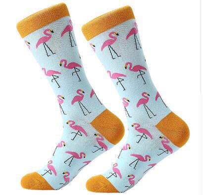
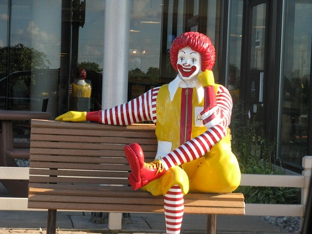
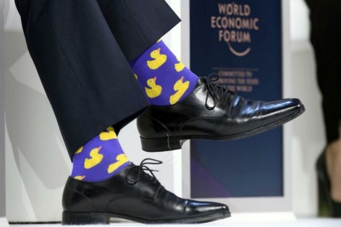
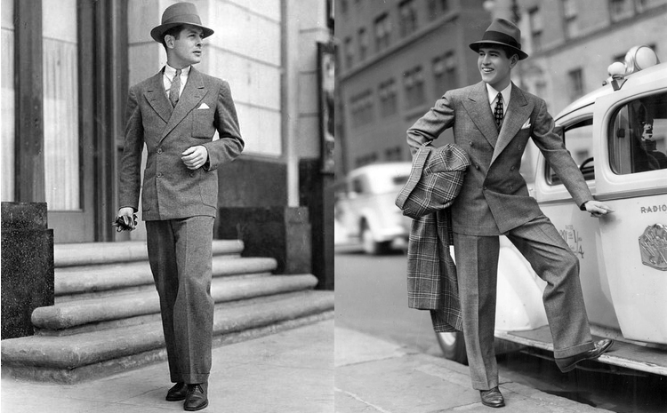

Про светлую магию костюмов и тёмную магию носков

Преамбула: В человеке всё должно быть прекрасно:
и одежда, и ботинки, и мотоцикл.
Есть один уютный чатик в контакте, где я порою общаюсь с интересными людьми. В числе прочего внезапно поднялась тема стиля мужской одежды и меня попросили изложить всё, что я об этом думаю, так что ниже будет мой личный взгляд на подобные вещи.
К обсуждению стиля подошли издалека:

- Сначала в чат прилетела фотография вот этих мужских носков (см. выше) с вопросом, как мол вам такие носки в качестве подарка на 23-е февраля?
- Один товарищ ответил, что он не суровый мужик, поэтому с радостью бы такие носил и вообще, стОит посмотреть на премьер министра Канады Джастина Трюдо (на фото в начале статьи).
- Хорошая девушка Настя написала, что у неё есть знакомый, который является менеджером вип клиентов банка и также носит дикие носки с костюмом.
Я не считаю себя суровым мужиком, так же как и человеком, разбирающимся в моде, но у меня безусловно есть свои представления о том, что такое хорошо и что такое плохо в отношении этого вопроса и я не представляю, какой тяжести психическое потрясение я должен пережить, чтобы надеть что-то подобное. Да, есть люди, которым нравятся носки с фламинго - безусловно. Но я почему-то до последнего момента считал их относительное количество настолько исчезающе малым, что подобные предметы гардероба воспринимались мной скорее как некий странный сувенир, нежели то, что действительно можно носить. Многим из нас может нравиться что-то, что другие считают странным. Если человеку так комфортно, то у себя дома он может ходить хоть в акваланге, хоть в балетной пачке, хоть в костюме микки-мауса - это его право. За закрытыми шторами и дверями он может хоть круглосуточно находиться вообще в чём мать родила - почему бы и нет? Когда человек выходит на улицу, начинают действовать другие, более жёсткие правила. Если человек появится в общественном месте в чём мать родила, на это должны отреагировать соответствующим образом правоохранительные органы. Если же он окажется в публичном месте без явных на то причин в акваланге или пачке, то это уже сфера интересов психиатрической лечебницы. Общество настороженно относится к тем индивидам, чья внешность явно не соответствует обстоятельствам и месту.
Если я вижу человека в деловом костюме, на носках которого красуются розовые фламинго, котята, симпсоны, губка боб (подчеркните нужное или добавьте своё), то у меня складывается стойкое ощущение, что я имею дело с клоуном, который маскируется под нормального человека. Мне постоянно кажется, что он вот-вот выхватит откуда-нибудь дикий парик, нацепит красный поролоновый нос и закричит что-нибудь вроде "Здравствуй, Бим!!! АХАХАХА!".
Предположим, я являюсь вип клиентом банка и пришёл решить какой-нибудь серьёзный вопрос, касающийся существенной для меня суммы денег. От этого зависит моё дальнейшее благосостояние на протяжении длительного периода моей жизни. И тут напротив меня садится человек, из под брюк которого показываются, скажем, симпсоны. Вероятно я промолчу, но доверие к этому банку у меня будет основательно подорвано. Мальчик, ты кто такой? Как ты сюда попал? Сколько тебе лет? Двенадцать? Может быть даже четырнадцать? Судя по твоему лицу, тебе больше 30, судя по твоим носкам - 14 максимум. И ты собираешься мне рассказывать о том, как такие маскирующиеся клоуны как ты будут управлять моим капиталом? А где тут выход, не подскажете?
Ну давай, расскажи мне про своё важное дело.

Настя написала, что "у человека просто всё в порядке с его внутренним ребёнком". Это прекрасно, что у него всё в порядке с "внутренним ребёнком". Ему не приходит в голову мысль о том, что у кого-то ещё может не возникнуть желания решать свои серьёзные вопросы с его несерьёзным внутренним ребёнком, отчаянно прорывающимся наружу? Носки с машинками и мячиками не говорят, а прямо-таки кричат окружающим - "я неординарная личность, я смелый и независимый, мне плевать на мнение окружающих", что само по себе вполне соответствует жизненной позиции 14-ти летнего подростка. Но как минимум часть людей в этом манифесте слышит свои вариации:
- "дяденька, меня мама на работу одевала"
- "мне плевать на нормы, принятые в обществе и на вас в частности"
- "я не имею ни малейшего представления о вкусе"

Носки с мультяшными героями сочетаются со строгим деловым костюмом примерно в той же степени, что и резиновые калоши. А почему нет? Может быть вам в них очень удобно. Это ведь всего лишь один элемент вашего образа. Пусть носки из под брюк большую часть времени не видны. Ложку соли в кружке чая тоже не видно, но она всё портит. Всё, сразу и бесповоротно. Система распознавания "свой-чужой" отнесёт вас во вторую категорию, если вы не соответствуете представлению большинства о том, как вы должны выглядеть в конкретной ситуации. Естественно, эти представления со временем меняются и возможно, рано или поздно большинство мужчин будут носить дорогой костюм и галстук с носками, на которых изображены жёлтые уточки или кораблики, но я искренне надеюсь, что не доживу до этого времени. Есть такое понятие, как классика и на мой взгляд - она прекрасна как явление. Прекрасна совершенством своей формы и содержания. Тем, что она не нуждается в том, чтобы её изменяли, поэтому она и стала классикой. Элементы одежды повседневного стиля изменяются постоянно. Для гардероба женщин это происходит быстро, для гардероба мужчин - медленнее, но классический мужской костюм за последние сто лет практически не изменился и я считаю, что это прекрасно. Не потому что я консерватор и ретроград, а потому что мне нравится то, как это выглядит. СтОит надеть костюм, как спина становится прямее, речь - чище, и, что самое главное, ты начинаешь острее испытывать чувство собственного достоинства - ощущение, которое всегда должно присутствовать с нами, но которое как-то незаметно блекнет на общем фоне прочих чувств и эмоций, испытываемых нами в повседневной жизни. Взгляните на то, как выглядят парни на фотографиях ниже. Этим фото примерно сто лет, но любой человек в костюме и носках с уточками на фоне этих мужчин выглядит полным идиотом.

Человек в костюме как будто получает немного суперсилы, по микроскопической её части от всех тех, чей образ у нас ассоциируется с костюмом. Каждый кто умеет носить костюм, становится чуть-чуть Робертом Монтгомери, Джеймсом Бондом - одним словом, джентльменом... Каждый, кто надевает под брюки носки с покемонами - теряет эту неуловимую магию и сам становится немного покемоном. Когда я набираю в гугле "премьер министр Канады", гугл сразу заботливо дополняет запрос словами "и его носки". То есть, набор разнообразных носков - это с точки зрения людей самое важное, чего этот человек добился в своей профессиональной области?
p> Что стало не так с людьми? Есть же тысячи статей освещающих то, как правильно подобрать галстук к рубашке, рубашку к костюму, носки к брюкам и дополнить образ всеми необходимыми аксессуарами так, чтобы не выглядеть глупо. Да возьмите в отношении подбора носков хотя бы пост или этот или вот этот. В конце-концов, наберите в google: "как подобрать носки к костюму" и возможно вы удивитесь, но в этих статьях ничего не сказано о размере уточек и фламинго или наиболее приемлемых типах покемонов.Да, я сейчас крайне редко ношу костюмы. Последний раз я был в костюме 1136 дней назад, то есть, больше трёх лет назад и это было в день собеседования. А до этого - 1211 день назад и это был день моей свадьбы. Но когда-то было время, когда я ходил в костюме двойке и даже тройке почти каждый день на протяжении примерно года. Просто потому что мне это в тот момент нравилось. Мне нравилось соответствовать своему внутреннему представлению о том, как может выглядеть человек, если он хочет выглядеть хорошо. В тот период я жил один, стирал и гладил свои рубашки, умел подобрать к ним правильный галстук, зажим для него и находил гармонию в сочетании всех элементов. Правда это вносило некий диссонанс в восприятие сослуживцев на работе, потому что не у всех укладывалось в голове, почему простой сисадмин ходит в костюме тройке и при галстуке, хотя дресскод не вводили? Я не знаю, почему такой период в моей жизни начался и по какой причине он закончился, но просто в какой-то момент времени мне стало не так важно, как я выгляжу. У меня появились другие ценности, интересы и ориентиры в жизни. Костюмы и рубашки сменились футболками и джинсами, потому что мне так было комфортнее и я экономил кучу времени, которую раньше тратил на отглаживание воротничков и наведение стрелок на брюках. Футболки преимущественно были однотонными, но сочетающимися с цветом джинс, носки - тоже однотонные. Был у меня и период, когда я ходил в берцах, байкерской косухе, камуфляжных штанах и "митольных" футболках, но все эти вещи так же прекрасно сочетались друг с другом.
Джинсы и футболку тоже можно подобрать так, что и в сорок лет будешь выглядеть педиковатым подростком. В некоторых районах нашего города выглядеть подобным образом банально небезопасно. Не знаю, как правильно формализовать критерии сочетаемости вещей в соответствии с эффектом, который вы хотите произвести на окружающих. Одна и та же шмотка может совершенно по-разному сидеть и выглядеть на разных людях. Те же футболки например с V-образным вырезом подходят мне намного больше, чем с U-образным и мне совершенно не идёт поло. В качестве примера человека, который себе в подавляющем большинстве случаев выбирает адекватную обстоятельствам одежду, могу привести наверное Райана Рейнольдса (вечно путаю его с Гослингом).
P.S.: Прямо захотелось купить себе новый костюм и пару галстуков. Обдумаю это на досуге.
P.S.S.: Человек может быть прекрасным, умным, интересным, и сплошь состоять из добродетелей, но встречают всё равно по одёжке, помните об этом, открывая ящик с носками.
Теги: мысли-вслух